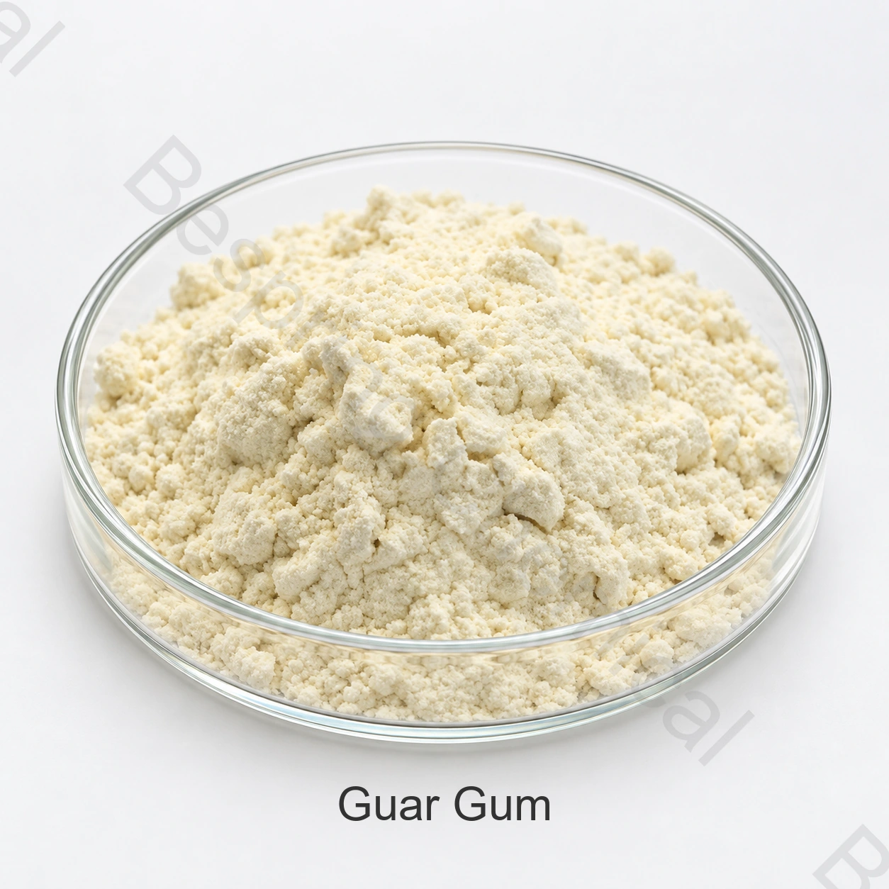

Соусы и заправки
Оцените вязкость и удержание частиц во взвешенном состоянии с учётом гидратации и перемешивания.
Пищевой ингредиент · Водорастворимый загуститель и стабилизатор · INS 412
Гуаровая камедь представляет собой гидроколлоид галактоманнана, используемый для повышения вязкости, стабилизации дисперсий и улучшения суспензии в подходящих пищевых составах.
Укажите предполагаемой пищей, целевыми лимитами, методами испытаний, количеством и назначением.

Кратко о продукте
Пищевая гуаровая камедь производится в основном из эндосперма семян гуара и состоит в основном из галактоманнана с высоким молекулярным весом. FAO/JECFA определяет его как INS 412 и CAS 9000-30-0.
Коммерческая пригодность зависит от точного класса, источника, метода тестирования, приложения и требований целевого рынка. Текущая согласованная спецификация и COA на партию регулируют транзакцию.
Области применения
Это области разработки, а не универсальные разрешения. Подтвердить законное использование, дозу и технические характеристики готового продукта.
Оцените вязкость и удержание частиц во взвешенном состоянии с учётом гидратации и перемешивания.
Оцените распределение влаги, мягкость и совместимость с процессом в полной рецептуре.
Оцените тело, управление кристаллом льда и синергию с другими стабилизаторами.
Контроль диспергируемости, комкования и гидратации посредством проектирования частиц и процессов.
Технические характеристики
Таблица содержит коммерческие справочные показатели. Договорные пределы, методы и результаты партии оценивают отдельно от нормативных требований.
| Тестовый элемент | Спецификация |
|---|---|
| Внешний вид | Белый для светло-желтого порошка |
| Вязкость, 1% раствор / 2 ч | ≥ 5000 мПа·с |
| Потери при сушке | ≤15.0% |
| Зола | ≤1.5% |
| Кислотно-нерастворимое вещество | ≤7.0% |
| Испытание на бораты | Проходит |
| белок | ≤7.0% |
| Испытание на крахмал | Проходит |
| Общий мышьяк (As) | ≤3,0 мг/кг |
| Свинец (Pb) | ≤2,0 мг/кг |
| Общее количество жизнеспособных микроорганизмов | ≤ 5000 CFU/г |
| Колиформная группа | ≤30 МПН/г |
Сравнение спецификаций: C6H10O5 не является полной молекулярной формулой этой полимерной камеди. Сравнивайте содержание, чистоту, размер частиц, гидратацию и вязкость по согласованным методам.
Поддержка квалификации
Запросить текущую согласованную спецификацию или TDS, SDS, методы испытаний и типовой или COA на партию.
Запросите применимые документы Kosher, Halal и ISO для конкретной марки, источника и производственной площадки; область действия оценивают отдельно.
Официальный источник: Спецификация FAO/WHO JECFA на гуаровую камедь. Условия применения и маркировки определяются конкретным продуктом и рынком.
Хранение и обращение
Вопросы покупателя
Соусы и заправки, пекарня и пломбы, молочные и замороженные десерты, сухие смеси являются общими областями приготовления. Юридическое использование, дозировка и производительность должны быть подтверждены для конкретного готового продукта и целевого рынка.
Поставляемая упаковка составляет 25 кг мешка; бумажный пакет или требование клиента. Справочное минимальное количество заказа составляет 500 кг.
Запросить текущую согласованную спецификацию или TDS, SDS, представительский или COA на партию, методы испытаний и применимые сертификаты качества пищевых продуктов для точной производственной площадки и сорта.
Обеспечить предполагаемое применение пищевых продуктов, целевую спецификацию, методы испытаний, количество, упаковку, место назначения, предпочтение паллет и требуемую дату доставки.
Связанные ингредиенты
Сравните идентичность, спецификацию и пищевые применения.
Сравните идентичность, спецификацию и пищевые применения.
Сравните идентичность, спецификацию и пищевые применения.
Поставка по согласованной спецификации
Совместное применение, целевой класс и спецификация, количество, упаковка, место назначения и необходимые документы.